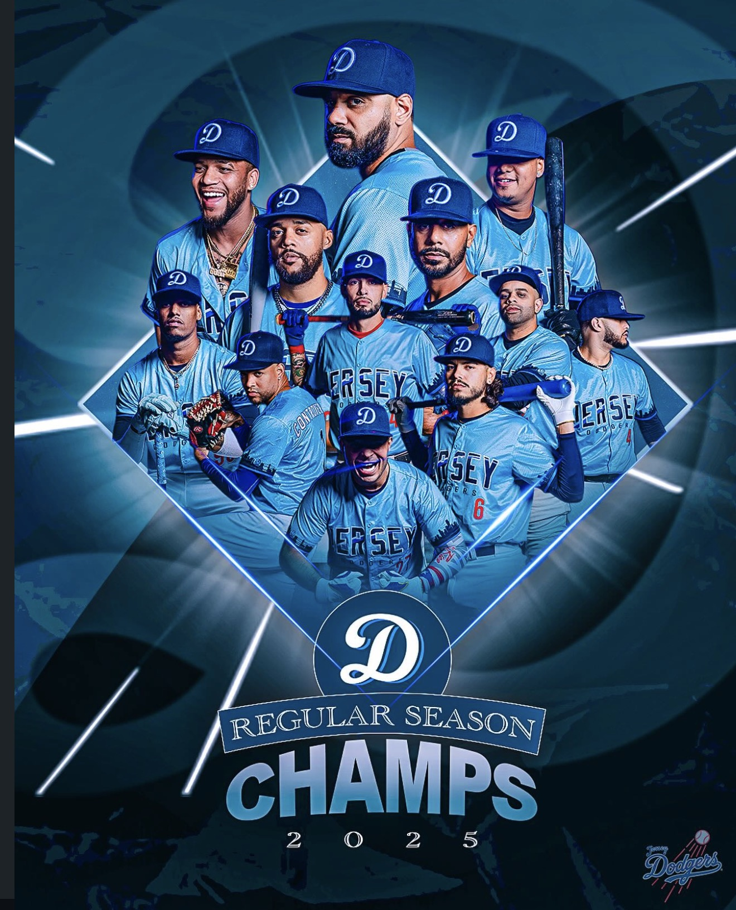

NEW JERSEY BASEBALL / THE DODGERS CLUBHOUSE

JERSEY DODGERS BASEBALL
OUR TEAM.
OUR TIME.
2025 regular season champions.
The same pride. A new chapter.
BUILT IN JERSEY.EVERY INNING. TOGETHER.
THE SEASON AT A GLANCE
Division standings
FALL 2026SAMPLE STANDINGS
| TEAM | W | L | PCT | GB |
|---|
TURNING UP THE HEAT
LAST 5 · SAMPLEHot Dodgers
24
BATTER · LAST 5 GAMES · SAMPLE
Alex Rivera
Finding the barrel. Setting the tone.
.500AVG
10HITS
7RBI
TEAM RESULTS · LAST 5WWLWW
SETTING THE STANDARD
Team leaders
Sample statistics and fictional player names · Fall 2026
2025
THE TROPHY CASE A SEASON TO
CHAMPIONS / 2025A SEASON TO
REMEMBER.
2025 regular season champions. A part of our story, forever.
BEYOND THE DIAMOND
Follow @jerseydodgers ↗From the clubhouse
Our community. Our corner.
YOUR BRAND HEREPRESENTING PARTNER · AVAILABLE
LOCAL BUSINESSCOMMUNITY PARTNER · AVAILABLE
PART OF THE TEAMTEAM PARTNER · AVAILABLE
BRING YOUR GAME.EARN YOUR
EARN YOUR
PLACE IN BLUE.
Interested in joining the Jersey Dodgers?
Let’s get you in the conversation.
Tryout dates and eligibility to be announced.